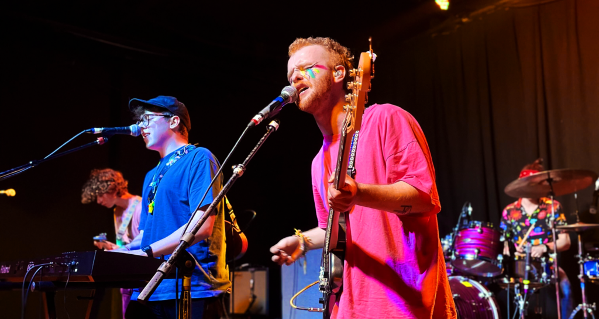

Childhood friends Callum Litchfield and Iain Gillespie formed the band in 2014 after the dissolution of their previous project, The November Criminals, which also included Bears in Trees guitarist Nicholas "Nick" Peters. Litchfield met George Berry, originally brought on board to mix and record their songs, at college. Berry has since also become the band's drummer.The band's name was developed from a name generator's suggestion "Bears In Submarines" but was changed because "Bears in Submarines" was too long.
The band cite Fall Out Boy, The Front Bottoms, Modern Baseball, The Wombats, Walk the Moon, The 1975, Dodie, and Cavetown as their main influences, but have also referred to many others on their social media.
BiT Website
Frogs
Adam Sandler